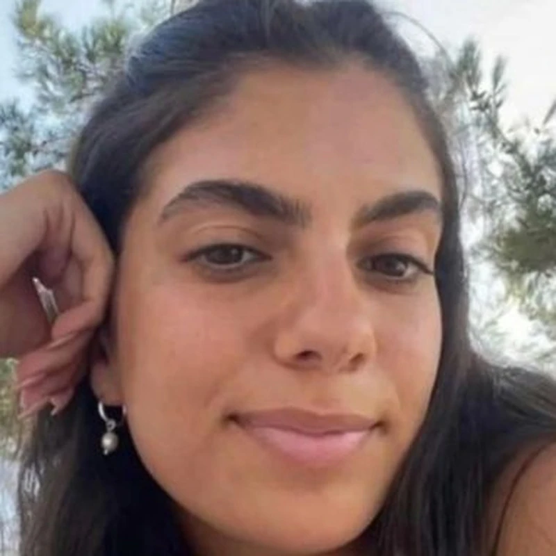

כפר עזה
שושני אופיר ז"ל
סמלת בחיל המודיעין, מפקדת טירונים וחברת קבוצת שיטה
סיפור חיים
בתם הבכורה של מירה ושי. נולדה ביום ו׳ באדר א׳ תשס״ג (8.2.2003) בקיבוץ כפר עזה שבנגב המערבי. אחות גדולה לעומרי ולעמית.
אופיר גדלה והתחנכה בכפר עזה, למדה בבית הספר היסודי המקומי ובתיכון "שער הנגב". היא הייתה תלמידה מצטיינת, ילדה יפה, אצילית, חברותית, אהובה ומוקפת בחברים רבים.
כשהייתה בת עשר, צולמה לכתבה במהדורת החדשות של ערוץ "רשת 13", יחד עם חבריה לקבוצת "שיטה" בקיבוץ. הכתבה עסקה בהתמודדותם של הילדים עם ההסלמה הביטחונית שחלה באזור בקיץ 2014, בימים שלפני מבצע "צוק איתן".
אופיר הייתה דמות בולטת בקבוצה, חברת אמת קשובה, מכילה ומבינה, שתמיד ידעה לראות את מי שעומד מולה והאירה כל חדר בחיוכה ובצחוקה המתגלגל.
ב־15.12.2021 התגייסה לצה״ל ושירתה בחיל המודיעין. אחרי הטירונות יצאה לקורס מ״כים של מערך מגל, ובסיומו שימשה כמפקדת כיתת טירונים בבסיס "מפרשית" של חיל המודיעין. היא הייתה מפקדת מוערכת ונערצת ותוארה על ידי הטירונים כלביאה אמיתית, שדאגה להם כמו אם ונלחמה על הטוב ביותר עבורם.
במסמך תפיסת תפקיד המפקד שכתבה באותה התקופה, פירטה אופיר מה דרוש על מנת להיות מפקדת טובה. בין היתר כתבה על חשיבות הסבלנות, על למידה מתוך התבוננות בהתנהלות הסגל הוותיק, ועל היכולת להתקדם באמצעות שאילת שאלות, ניסוי וטעייה. עוד ציינה את הדוגמה האישית שמפקדת צריכה לתת לחייליה, את הצניעות והשקט שבהם יש לגשת לטירונים, ולהפגין בפניהם חיוביות ושאיפה למצוינות.
שאיפתה הייתה שחייליה יפעלו לא מכוח הסמכות והדרגה שלה אלא מתוך כבוד אליה כאדם. היא זכרה את תחילת דרכה בצבא, ידעה להזדהות עם הטירונים והעניקה להם את התמיכה המדויקת לה נזקקו. בנוסף, הקפידה להעצים אותם ולאפשר להם מקום לביטוי אישי בכל הזדמנות.
במקביל, אופיר עזרה לכל איש סגל במחלקה ובפלוגה ועשתה זאת באהבה גדולה. היא חנכה והדריכה מפקדים חדשים, לימדה אותם על ביטחון ואסרטיביות מול חיילים, נתנה טיפים והתפנתה לשוחח עם כל מי שנזקק לעצתה, בכל עת. כשם שעשתה עם חייליה, כך הקפידה גם עם המפקדים החדשים - לפרגן, לומר מילה טובה, לטפח את הביטחון ולהעצים. כך סיפרה אחת המפקדות כי יום אחד אופיר צילמה אותה בעודה עומדת מול החיילים, שלחה לה את התמונה וכתבה: "אני בדיוק רואה אותך מול החיילים ואת מפקדת מעולה! זה מרשים באמת".
לאחר תקופה בה שימשה כמ״כית, קודמה אופיר לתפקיד הרל״שית של מפקד הבסיס.
לאופיר הייתה נפש חופשיה ומלאת שמחת חיים, ותשוקה למצות כל רגע ולאסוף חוויות מרגשות. היא אהבה לבלות בבית ברוגע, להאזין למוזיקה ולקרוא ספרים, ובאותה מידה נהנתה לצאת לבלות עם חבריה ולהתנסות בספורט אתגרי.
מגיל צעיר גילתה נחישות, משימתיות ואסרטיביות, ידעה לראות את התמונה המלאה כמו גם לרדת לפרטים הקטנים, ובזכות תכונות אלו הצליחה להשיג כל מטרה שהציבה לעצמה. היא הייתה ברוכת כישרונות, יצירתית ובעלת חוש אסתטי מפותח, התעניינה בעיצוב וחלמה ללמוד אדריכלות. בנוסף, חלמה לטייל ברחבי העולם לבדה ועם חברים ולהשתתף בפעילויות אקסטרים כמו צניחה חופשית, סקי ועוד.
בשבת כ״ב בתשרי, שמחת תורה תשפ״ד, 7 באוקטובר 2023, הייתה אופיר בדירתה בשכונת הצעירים בקיבוץ כפר עזה כשהחלה מתקפת הטרור. בזמן שהסתגרה בממ״ד, התכתבה בוואטסאפ עם בני משפחתה ועם חבריה לקבוצת "שיטה".
בסביבות השעה 10:00 בבוקר, כתבה להם שנורתה, נפצעה בידה והיא זקוקה לעזרה. חבריה ניסו לשלוח אליה כוחות הצלה, אך ללא הצלחה. אביה יצא מהבית עם נשק בניסיון להגיע אליה, אך נורה ונפצע בעצמו.
בשעה 11:46 כתבה לחברותיה: "אוהבת אתכן" וכתבה לאימה "אני אוהבת אותך". מרגע זה נותק הקשר עמה. אופיר נורתה למוות בביתה על ידי מחבלי החמאס.
סמל אופיר שושני נפלה בקרב ביום כ״ב בתשרי תשפ״ד (7.10.2023). בת עשרים בנופלה. הובאה למנוחות בבית העלמין הצבאי בבאר שבע. הותירה אחריה הורים ושני אחים. לאחר נפילתה הועלתה לדרגת סמל ראשון.
אימה, מירה, ספדה לה: "ילדה מושלמת, יפה, חכמה, מתוחכמת, תמיד מתוקתקת, תמיד יודעת הכול. הייתה לך הליכה ומבט אצילי, ידעת בדיוק מה את רוצה ושאף אחד לא יתבלבל. השגת כל מה שאת רוצה. מוקפת חברים שכל כך אהבו אותך. רצית לטרוף את העולם, אהבת את החיים, במיוחד את הטובים. הייתה לך רשימה של דברים שחייבים לעשות בחיים ועברת סעיף סעיף: לקפוץ ממטוס, לעשות סקי, קעקוע, תאילנד, דרום אמריקה ומה לא. ספרת את הימים עד השחרור".
חבריה לקבוצת "שיטה" כתבו: "פיפי שלנו, הלב הפועם של קבוצת 'שיטה'. ברגעים כאלה היינו נעזרים בך - בהיגיון שלך, בביטחון שלך, בכוחות שלך. את ילדה מיוחדת, אחת לדור, נפש בוגרת שבזמן שכולם רודפים אחרי הדבר הבא את בטוחה בעצמך, יושבת בדירה עם כוס תה, שירי גלגל״צ מתנגנים ברקע והציור שעוד נשלים לך...".
הם הוסיפו: "תמיד אמרנו שצריך אופיר בכל קבוצה, מישהי עם אנרגיות, מרימה וזורמת אבל החלטית, שאקלית, בקיצור - שאפשר לסמוך עליה בעיניים עצומות. מישהי שבזמן שכולם מתלבטים לאן ומתי, תשלח הודעה קצרה וקולעת שמסכמת את האירוע. אבל לחבורה שלנו אין ולא תהיה אופיר יותר, והחור בליבנו ענק ושואב ולא ייסגר לעולם כי אף אחד לא יכול לקחת את מקומך".
אופיר מונצחת באתר ההנצחה לחללי קהילת המודיעין, הנמצא סמוך לבסיס גלילות, ובאתר ההנצחה האינטרנטי של המרכז למורשת המודיעין. בבסיס בו שירתה ניטע עץ זית לזכרה ולצידו נבנה ספסל, עליו נחקקו המילים: "אילו יכולת לראות את עצמך כפי שאחרים רואים אותך, היית רואה עד כמה הינך אדם מיוחד במינו".
הסופרת רות כהן־מרק הקדישה לזכרה של אופיר את ספרה "מפונים מהבית", שכתבה על ילדי המפונים במלחמה. עמוד הנצחה לאופיר נפתח באינסטגרם - remember_ofir_shoshani, ועמודים נוספים לזכרה נפתחו באתרים "גיבורות ישראל", "למלא את החלל" ו-memoriz.plus.